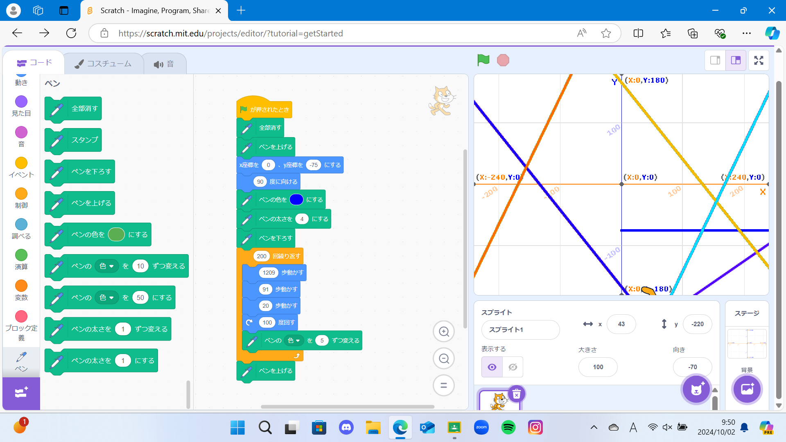
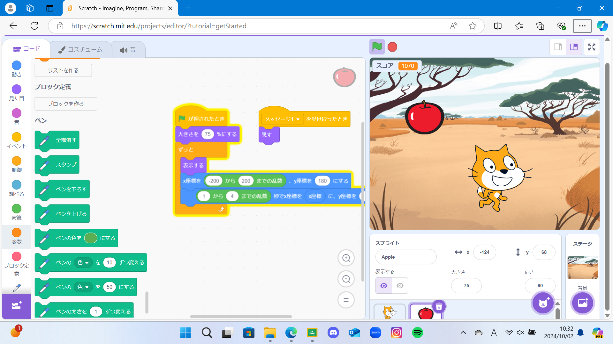

1週目のレポート ： 公大高専１年実習I-1
４ｂ班３６番 はやと
第1週目
1-1 サイエンスアート

1.内容
スクラッチを使って線を書くプログラムを自分で作った。どんな角度にすればどう動くかを確かめていた。
2.感想
初めてプログラミングをやってみて、数学をやっている感じがして面白いなと思ったけど、プログラムを多くすると把握できなくなりそうで難しいなと思った。
1-2 ゲーム

1.内容
上からスピード、場所がランダムで落ちてくるリンゴを拾うゲーム。早く落ちてくるリンゴをとるのがほぼ不可能だったので猫の体大きくしてリンゴを取りやすくした。
2.感想
ゲームの作り方を知り、一つのゲームを作るのにも時間と技術とアイデアがとても必要なんだなと思った。もっとうまくなって面白いゲームをつくれるようになりたいなと思った。
1-3 ホームページ作成
私のホームページ
1.内容
自分の所属している部活やモーニングルーティーンを記入した。
2.感想
一つのサイトを作るだけでも大変だなと思った。ウイルスのあるサイトはどうやって作るんだろうと思った。
各ページへのリンク
1週目のレポート
2週目のレポート
3週目のレポート
私のホームページ